Viajero «ROMA» · 4 días (17-20 oct 2026) con vuelo, alojamiento, una entrada (Coliseo, dom 18 a las 10:00) y la excursión (Pompeya, lun 19 a las 08:00)
iPhone 390x844. Día simulado con window.__horaFalsa y setDevSimulatedTodayIso. Scripts: scripts/destino/viajero_roma_*.mjs. Nada arreglado. Capturas en VIAJEROS_capturas/roma_*.jpg. «hora» = hora simulada. Nota: el vuelo, el alojamiento (Hotel Quirinale), la entrada y la excursión se pusieron con el store (transportBookings, accommodationSelections, addReservation), no por la UI; lo dudoso va como «duda». No se pudo comprobar sonido (Chrome sin ventana y sin audio): ningún momento sonoro se ha evaluado.
Sin lógica / contradicciones (importantes)
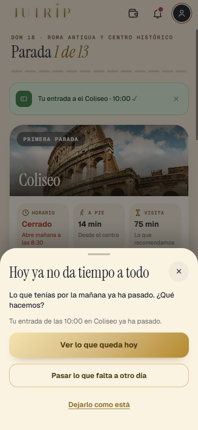
sin lógica Sitio cerrado como «Primera parada»
Pantalla: HOY, dom 18. Hora: 19:00 y 22:40 (también a las 13:00).
El Coliseo sigue de «Primera parada · Parada 1 de 13» con 0 hechas; la caja dice «Cerrado · Abre mañana a las 8:30» y debajo la hoja «Hoy ya no da tiempo a todo». A las 13:00 sigue también de primera parada con «Tu entrada a el Coliseo · 10:00 ✓» (3 h pasada; la hoja dice «Tu entrada de las 10:00 en Coliseo ya ha pasado»). El viajero no marcó nada: la app no avanza a la siguiente parada abierta.
Repetir: viaje de prueba + reserva Coliseo dom 18 10:00; hoy('2026-10-18', 19*60). Capturas: roma_hoy_d2_1900.jpg, roma_hoy_d2_1300.jpg, roma_hoy_d2_2240.jpg.
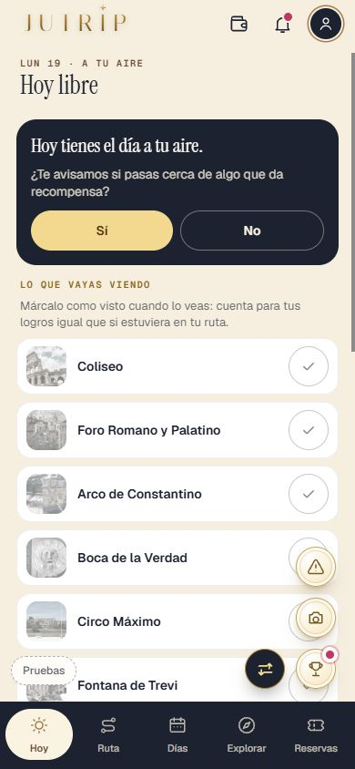
sin lógicacontradicción El día de la excursión sale como «Hoy libre / A tu aire»
Pantalla: HOY, lun 19. Hora: 08:30, 13:00, 19:00, 22:40 (idénticas).
RESERVAS marca «✓ Excursión a Pompeya y Sorrento» (reservada lunes 19 a las 08:00) y el día 3 tiene dayType: excursion, pero HOY dice «Hoy tienes el día a tu aire» y lista Coliseo, Foro, Trevi… sin la excursión, ni hora de recogida, ni punto de encuentro. Duda: la excursión se creó con addReservation + objeto de excursión sin selectedExcursionId en el día; si el flujo real lo rellena, no se da. Aun así, con reserva y día de excursión HOY no debería decir «a tu aire».
Repetir: hoy('2026-10-19', 13*60). Captura: roma_hoy_d3_1300.jpg.
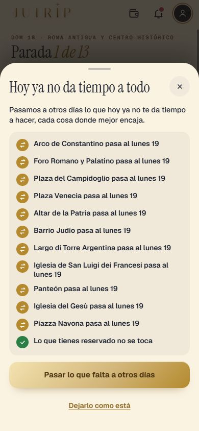
sin lógica «Pasar lo que falta a otros días» manda 10 sitios al día de la excursión
Pantalla: HOY dom 18 › hoja «Hoy ya no da tiempo a todo». Hora: 17:00.
Todos los sitios (Arco de Constantino, Foro, Campidoglio, Venecia, Altar de la Patria, Barrio Judío, Torre Argentina, San Luigi, Panteón, Gesù, Navona) «pasan al lunes 19», que es el día de excursión de 12 h (Pompeya 08:00). Además, a las 17:00 aún faltan 1,5 h de luz y la hoja propone quitar casi todo el día. El Foro y el Palatino, que cierran a las 18:30, estaban a tiempo.
Repetir: hoy('2026-10-18', 17*60) con la entrada del Coliseo y la excursión del lunes; abrir la hoja «Hoy ya no da tiempo a todo». Captura: roma_acc_d2_otrodia.jpg.
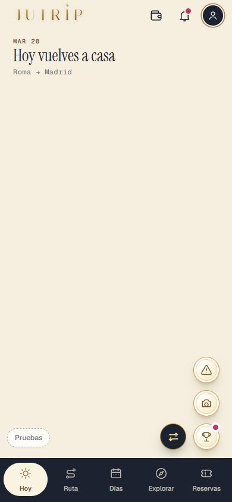
pantalla vacía Día de vuelta vacío
Pantalla: HOY, mar 20 (día de vuelta). Hora: 08:30, 13:00, 19:00, 22:40: idéntica.
Solo «Hoy vuelves a casa · Roma → Madrid» y el resto en blanco: sin billete de vuelta, sin hora del vuelo (19:40 puesta), sin recordatorio de hacer el equipaje/ir al aeropuerto, sin nada que hacer por la mañana. A las 22:40, con el vuelo ya salido, sigue «Hoy vuelves a casa». En HOY del día de llegada sí hay billete QR.
Repetir: hoy('2026-10-20', 19*60). Captura: roma_hoy_d4_1900.jpg.
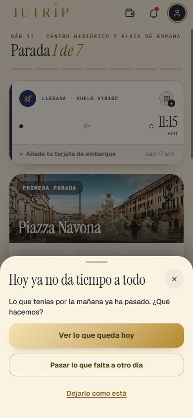
sin lógica A las 22:40 el día de llegada sigue en «Parada 1 de 7 · Piazza Navona»
Pantalla: HOY, sáb 17. Hora: 19:00 y 22:40.
Con 0 hechas, «Primera parada: Piazza Navona (A pie 9 min Desde el centro)» a las 22:40, más la hoja «Lo que tenías por la mañana ya ha pasado» (a las 19:00, 22:40 no es «por la mañana»). Duda: la hoja a esa hora quizá deba cerrar el día en lugar de ofrecer «Ver lo que queda hoy».
Repetir: hoy('2026-10-17', 22*60+40). Capturas: roma_hoy_d1_1900.jpg, roma_hoy_d1_2240.jpg.
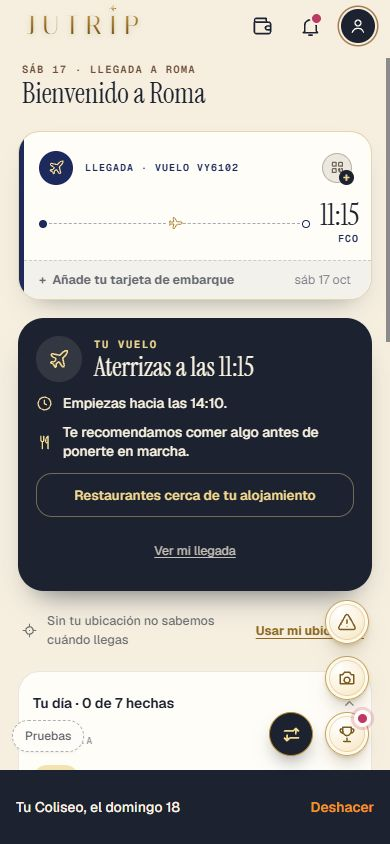
contradicción Alojamiento puesto en DÍAS/RESERVAS, pero HOY lo pide y dice «Desde el centro»
Pantalla: HOY (todos los días) frente a DÍAS y RESERVAS. Hora: cualquiera.
DÍAS: «ALOJAMIENTO · ROMA · Hotel Quirinale»; RESERVAS: «✓ Alojamiento · Listo». HOY: «Pon tu alojamiento para volver con un toque · Añadir» y la tarjeta de parada «A pie 14 min · Desde el centro» (no «Desde el alojamiento»). Duda: se guardó con accommodationSelections[primerDia.id] (la clave del segmento); sin dirección ni coordenadas, HOY quizá no lo cuenta; pero entonces RESERVAS no debería decir «Listo».
Captura: roma_hoy_d1_0830.jpg (abajo, «Pon tu alojamiento…» está tapado por la barra), roma_acc_dias.jpg.
Textos
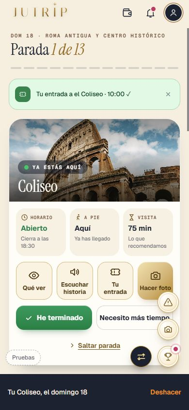
texto «Tu entrada a el Coliseo» y «en Coliseo» sin artículo
Pantalla: HOY dom 18, aviso verde arriba y hoja del retraso. Hora: 09:00 y 11:30.
«Tu entrada a el Coliseo · 10:00 ✓» (debe ser «al Coliseo»); en la hoja «Tu entrada de las 10:00 en Coliseo ya ha pasado» (falta «el»). También «Tu Coliseo, el domingo 18» en el aviso de abajo (suena a «tu Coliseo»).
Capturas: roma_acc_d2_0900_llegado.jpg, roma_hoy_d2_1900.jpg.
texto «¿Cómo vais?» (segunda persona del plural)
Pantalla: HOY dom 18, tarjeta con «Con fuerzas / Cansados» (aparece al volver a HOY tras «Pasar a otro día»). Hora: 17:00.
Texto volcado: «¿Cómo vais? Con fuerzas · Cansados». El viaje es de pareja (companion=couple) y la app habla de «tú» en el resto de textos; «vais» es plural/vosotros. Captura de la pantalla relacionada: roma_acc_d2_otrodia.jpg (la tarjeta queda detrás de la hoja).
Algo que tapa un botón o texto
tapa Los botones flotantes tapan «Necesito más tiempo» y los círculos de ✓
Pantalla: HOY, tarjeta «Ya estás aquí» (dom 18, 09:00 con GPS en el Coliseo): «Necesito más tiempo» queda cortado bajo Avisos/Cámara/Logros. En «Hoy libre» (roma_hoy_d3_1300.jpg) los tres botones tapan el ✓ de «Boca de la Verdad» y «Circo Máximo» (no se puede marcar como visto sin hacer scroll). En DÍAS tapan el chip verde de la primera parada. Probable duda: regla V42 dice que los flotantes van a la derecha; el contenido debería dejar margen.
Repetir: window.__pos = {lat:41.8902,lng:12.4922}; window.__perm='granted' y pulsar «Ya he llegado». Capturas: roma_acc_d2_0900_llegado.jpg, roma_hoy_d3_1300.jpg, roma_acc_dias.jpg.
tapaduda La barra «Tu Coliseo, el domingo 18 · Deshacer» no se va
Pantalla: HOY sáb 17 y dom 18 (roma_hoy_d1_0830.jpg, roma_acc_d2_0900_llegado.jpg). Sale tras añadir la reserva y se queda tapando lo de abajo (menú «Pon tu alojamiento», «Tu día») aunque cambie de día simulado. Duda: puede ser efecto de cambiar el día simulado sin recargar.
Dudas
duda Atardecer «Hoy el sol se pone a las 18:25» y sugerencias lejos
HOY dom 18 a las 17:00 (roma_acc_d2_otrodia.jpg y texto): «Hoy el sol se pone a las 18:25… Ponte Sisto a 22 min a pie · Mirador de San Pietro in Montorio a 26 min a pie». El 18 oct en Roma el sol se pone hacia las 18:05-18:10 (hora de verano), así que son unos 15-20 min de diferencia; y con el Coliseo de primera parada, los dos sitios sugeridos quedan a 22-26 min: no se llega a verlo.
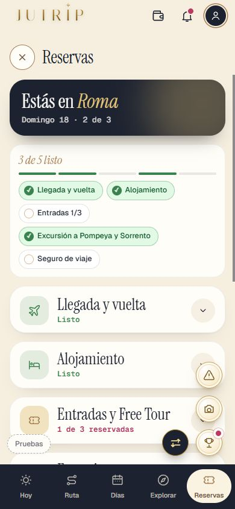
duda Cabecera de RESERVAS «Domingo 18 · 2 de 3» con un viaje de 4 días
RESERVAS (dom 18, 12:00): «Domingo 18 · 2 de 3»; RUTA dice «4 días · 3 noches»; DÍAS tiene 4 días. Si «2 de 3» son noches, no se entiende. También «3 de 5 listo» con la excursión en ✓ y «Entradas 1/3» (¿tres entradas necesarias? la ruta de 4 días solo tiene una reservada). Captura: roma_acc_reservas.jpg.
duda Dos tarjetas del mismo vuelo el día de llegada
HOY sáb 17 08:30: el billete «LLEGADA · VUELO VY6102 · 11:15 FCO» y justo debajo «TU VUELO · Aterrizas a las 11:15». Dos cosas que dicen lo mismo con diseño distinto (claro y oscuro). A las 08:30 aún no ha salido el vuelo y a las 13:00 el billete sigue sin «Tarjeta de embarque guardada». Captura: roma_hoy_d1_0830.jpg.
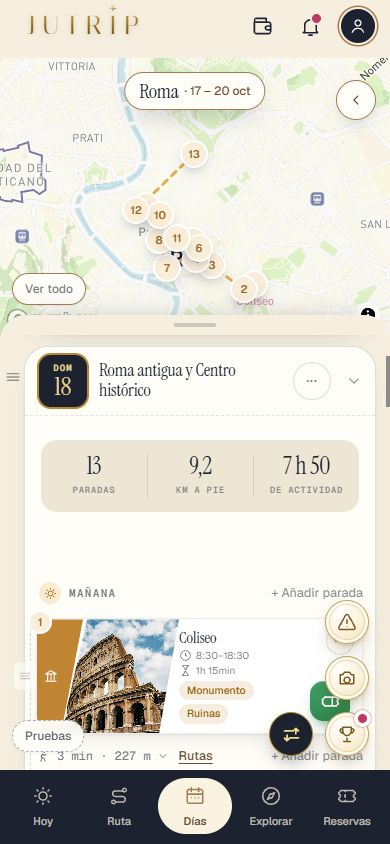
duda DÍAS: horarios con distinto formato y una iglesia cerrada a la hora prevista
DÍAS día 18: «Coliseo 8:30–18:30», «Foro 9:00–18:30» pero «Iglesia del Gesù 7:45–13:30 / 16:30–20:00» (otro formato, tramos partidos), y el Gesù va en TARDE tras el Panteón, antes de Piazza Navona, sin hora visible: no se ve si cae en el cierre de 13:30–16:30. Además «Hecho · Ver tu día» en el día 17 aunque HOY mostraba «0 de 7 hechas». Captura: roma_acc_dias.jpg.
duda Perfil con datos de demostración
Perfil (roma_acc_perfil.jpg): «Hola, Viajero · Nivel 8 · Explorador», «33 logros», recuerdos «ROMA 13 OCT 2026» y «Antes de la app · 4 países» con el viaje de prueba en ?logrosDemo=1; «Roma, 17–20 oct 2026 · 4 días · 20 paradas» cuenta 7+13 paradas aunque el día 3 sea excursión. No se apunta como fallo (modo demo), pero no cuadra «13 OCT 2026» con un viaje del 17.
Tercera pasada (día 1 con GPS, RESERVAS)
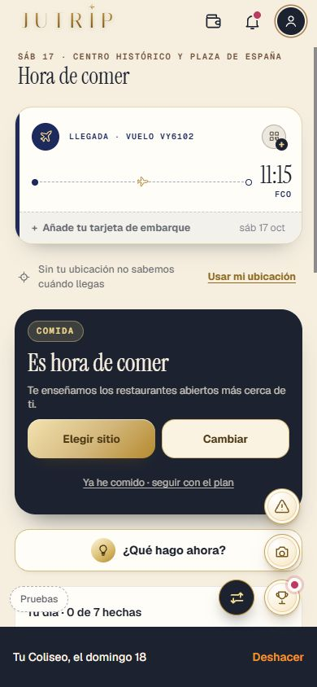
duda GPS puesto pero HOY sigue diciendo «Sin tu ubicación no sabemos cuándo llegas»
Pantalla: HOY sáb 17. Hora: 15:00 (GPS simulado en Piazza Navona), 12:00 (GPS en Fiumicino) y 20:30 (GPS en Trevi).
Con __pos y __perm='granted' la barra «Usar mi ubicación» no cambia y en el de 20:30 sigue «Primera parada: Piazza Navona · A pie 9 min · Desde el centro». Muy probable que sea el simulador (el watchPosition de prueba no emite posiciones); no se apunta como fallo de la app. Con eso «Ya he llegado» no se pudo probar en el día 1 (a las 15:00 la tarjeta es «Es hora de comer»).
Capturas: roma_flu_d1_1500_gps.jpg, roma_flu_d1_1200_aeropuerto.jpg, roma_flu_d1_2030_fontana.jpg.
sin lógica «Es hora de comer» a las 15:00 con la comida ya apuntada en «Mediodía»
HOY sáb 17, 15:00: tarjeta «Es hora de comer / Elegir sitio / Cambiar / Ya he comido» encima del plan, y el plan dice «MEDIODÍA · Comida, cerca de tu alojamiento» sin hora ni restaurante. Un viajero que aterrizó a las 11:15 y empezó a las 14:10 recibe «Piazza Navona (A pie 9 min)» solo después de dar a «Ya he comido»; la hoja «Hoy ya no da tiempo a todo» no sale a esa hora pero sí a las 19:00. Además la barra «Tu Coliseo, el domingo 18 · Deshacer» sigue tapando el pie.
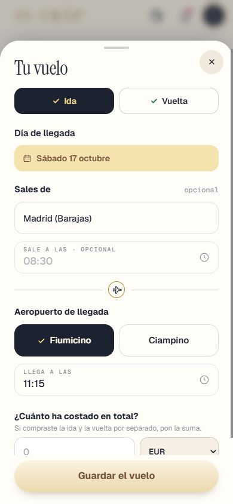
duda RESERVAS › Llegada y vuelta: pulsar la tarjeta abre la hoja «Tu vuelo» en edición, no se ve el vuelo guardado abierto
RESERVAS (sáb 17): el texto de la página (detrás de la hoja) enseña «IDA sábado 17 · Llegas a las 11:15 · Vuelo VY6102» y «VUELTA martes 20 · Sales a las 19:40», con «+ Añade tu tarjeta de embarque o escribe los datos a mano» dos veces; al pulsar «Llegada y vuelta» salta la hoja «Tu vuelo» de edición con «Sales de · Madrid (Barajas) · SALE A LAS (opcional) 08:30» (gris, de ejemplo, no es mío) y «¿Cuánto ha costado en total? 0». Es el mismo patrón que CLAUDE.md V45 pide (cada vuelo guardado abierto); aquí duda si la hoja debía abrirse sola. Captura: roma_flu_res_llegada.jpg (no se pudo hacer DÍAS día 3 y día 4: el script falló con un error de sintaxis mío).
Lo que no se pudo ver
Esta pasada se hizo con 3 scripts por la cola de Chrome (la cola estuvo ocupada por la batería durante ~40 min). Se recorrieron los 4 días a 4 horas cada uno, «llegar», «Cambiar plan» (retraso, comer, otro día, saltar, añadir sitio: solo se vieron las opciones y la hoja de «otros días»), «llegar tarde» al Coliseo (11:30), DÍAS, RESERVAS, EXPLORAR, RUTA y Perfil. Sonidos no comprobables. Si viajero_roma_3_flujo.mjs llegó a correr, sus capturas están en roma_flu_*.jpg (GPS en el día 1, saltar, aeropuerto, DÍAS día 3 y 4, RESERVAS abiertas) y no están analizadas aquí.